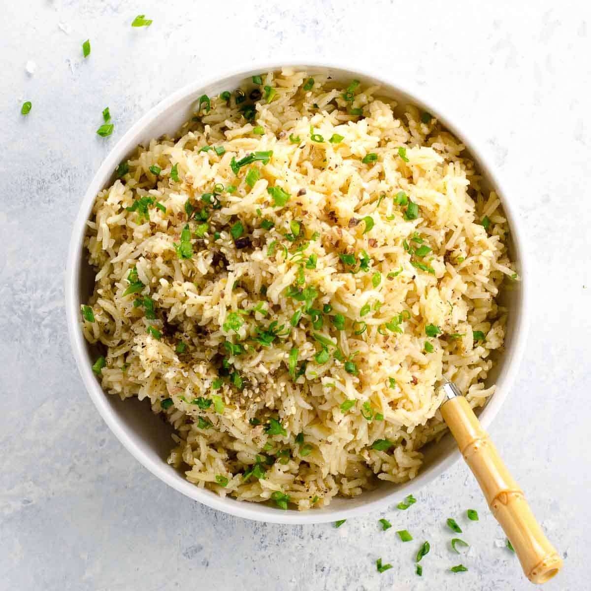
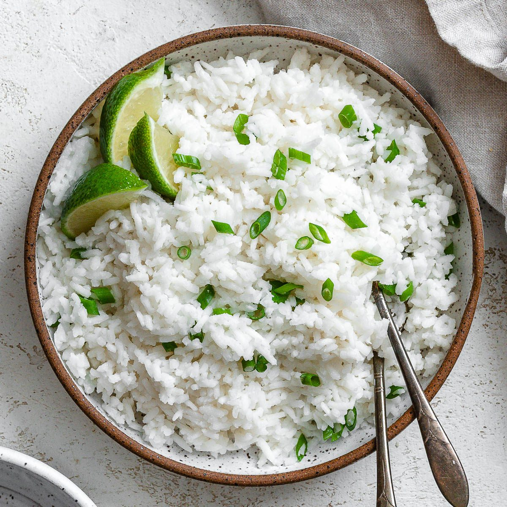
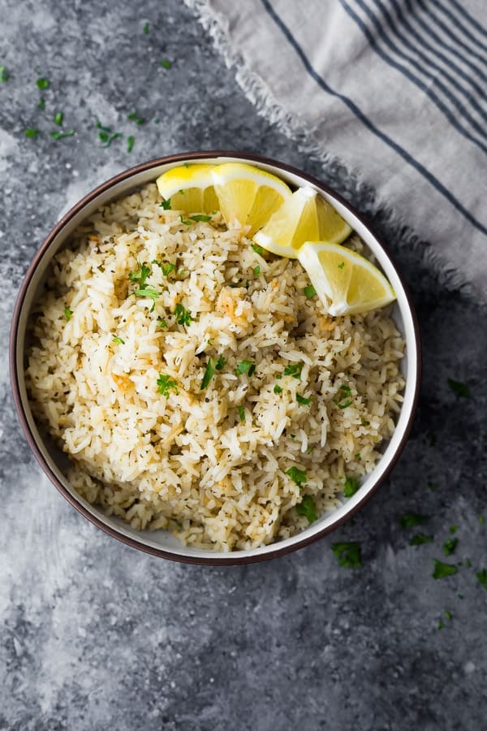
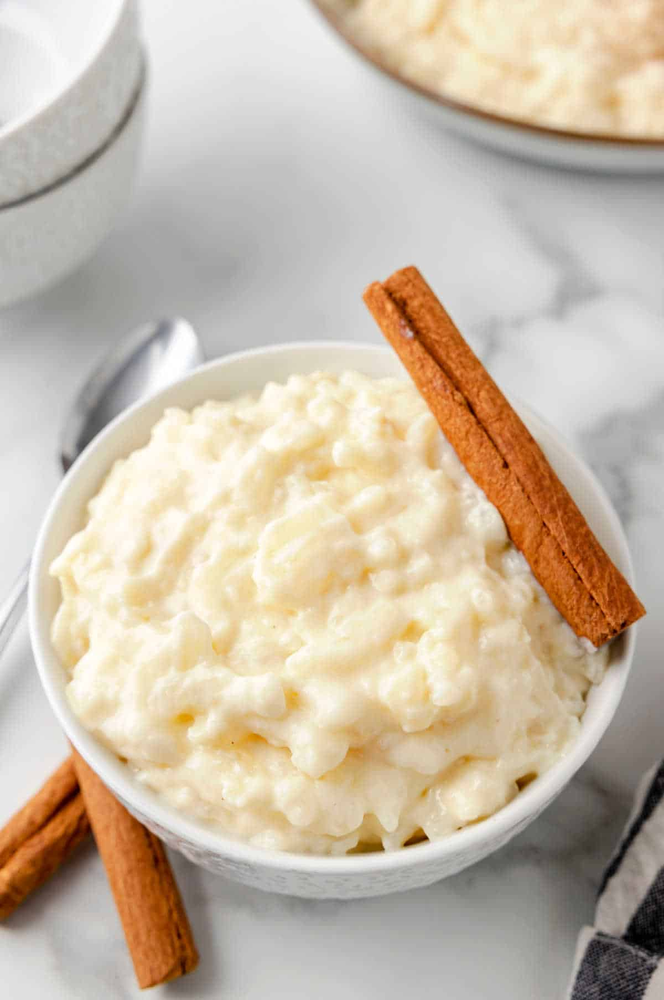

Classic Basmati Rice
Ingredients:
- 1 cup basmati rice
- 2 cups water
- 1 tsp salt
- 1 tbsp butter or ghee (optional)
Instructions:
- Rinse the basmati rice under cold water until the water runs clear.
- In a pot, combine rice, water, salt, and butter/ghee.
- Bring to a boil, then reduce heat to low, cover, and simmer for 15-20 minutes.
- Fluff with a fork and serve.

Vegetable Biryani
Ingredients:
- 1 cup basmati rice
- 2 cups mixed vegetables (carrots, peas, beans, cauliflower)
- 1 onion, sliced
- 1 tomato, chopped
- 1 tsp ginger-garlic paste
- 1 tsp turmeric powder
- 1 tsp garam masala
- 1 tsp cumin seeds
- 2 tbsp oil or ghee
- Fresh cilantro for garnish
Instructions:
- Cook basmati rice and set aside.
- Heat oil in a pan, add cumin seeds, and sauté onions until golden.
- Add ginger-garlic paste, tomatoes, and spices. Cook until tomatoes soften.
- Add mixed vegetables and cook until tender.
- Layer the cooked rice over the vegetables, cover, and let it steam for 10 minutes.
- Garnish with cilantro and serve hot.

Coconut Basmati Rice
Ingredients:
- 1 cup basmati rice
- 1 cup coconut milk
- 1 cup water
- 1 tsp salt
- 1 tbsp shredded coconut (optional)
- 1 tsp coconut oil
Instructions:
- Rinse the rice and drain.
- In a pot, combine rice, coconut milk, water, salt, and coconut oil.
- Bring to a boil, then reduce heat, cover, and simmer for 15-20 minutes.
- Fluff the rice and top with shredded coconut before serving.

Lemon Herb Basmati Rice
Ingredients:
- 1 cup basmati rice
- 2 cups water
- 1 lemon (zest and juice)
- 2 tbsp fresh herbs (parsley, cilantro, or dill)
- 1 tbsp olive oil
- Salt and pepper to taste
Instructions:
- Cook basmati rice as usual.
- In a bowl, mix lemon zest, lemon juice, olive oil, and herbs.
- Toss the cooked rice in the lemon-herb mixture.
- Season with salt and pepper, and serve as a side dish.

Basmati Rice Pudding
Ingredients:
- 1/2 cup basmati rice
- 4 cups milk
- 1/2 cup sugar
- 1 tsp vanilla extract
- 1/2 tsp cardamom powder
- 2 tbsp raisins or nuts (optional)
Instructions:
- Rinse the rice and cook it in milk over low heat until soft.
- Add sugar, vanilla, and cardamom. Stir until thickened.
- Mix in raisins or nuts if desired.
- Serve warm or chilled.